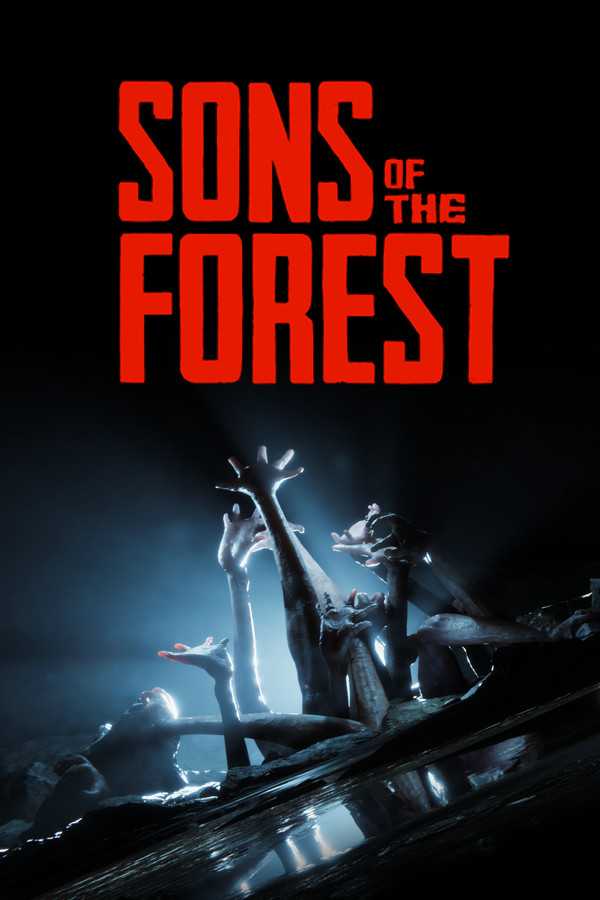

Select A Forest!
Select A Game Down Below!
Summary
"Sons of the Forest" is an upcoming survival horror video game developed by Endnight Games, serving as a sequel to "The Forest." Set in a mysterious and dangerous forest, players must navigate through the environment, gather resources, build shelter, and defend against hostile threats, including mutated creatures. The game promises enhanced graphics, deeper gameplay mechanics, and a more immersive experience compared to its predecessor. Players can expect a tense and atmospheric survival adventure with a focus on exploration, crafting, and combat. "Sons of the Forest" aims to build upon the foundation of its predecessor while introducing new features and challenges to captivate players in its haunting world.
More Detail
"Sons of the Forest" is an eagerly anticipated sequel to the acclaimed survival horror game "The Forest," developed by Endnight Games. Set in a mysterious and foreboding forest, players find themselves thrust into a hostile and unforgiving environment teeming with mutated creatures, enigmatic anomalies, and deadly traps. The game builds upon the foundation laid by its predecessor, promising enhanced graphics, deeper gameplay mechanics, and a more immersive experience overall. Players must once again navigate the treacherous wilderness, scavenging for resources, constructing shelter, and fortifying defenses to survive against the relentless threats that lurk in the shadows. One of the standout features of "Sons of the Forest" is its emphasis on exploration and discovery. The forest is vast and rife with secrets, including hidden caves, ancient ruins, and otherworldly phenomena waiting to be unearthed. Players must venture into the unknown, uncovering clues and piecing together the mysteries of the forest to uncover its dark secrets. Survival remains paramount in "Sons of the Forest," with players facing a myriad of challenges that test their wit, resourcefulness, and courage. From hunting for food and water to crafting makeshift weapons and tools, every decision and action can mean the difference between life and death in this hostile wilderness. Combat has been refined and expanded, offering more options for engaging with the various threats that inhabit the forest. Players can choose between stealthy takedowns, ranged attacks, or all-out confrontations, each approach carrying its own risks and rewards. Multiplayer also returns in "Sons of the Forest," allowing players to team up with friends or strangers to tackle the challenges of the forest together. Cooperative play adds an extra layer of strategy and camaraderie as players work together to survive and unravel the mysteries of the forest. As players progress, they'll uncover the dark history of the forest and the sinister forces that dwell within. The narrative unfolds through environmental storytelling, cryptic clues, and haunting encounters, immersing players in a rich and atmospheric world that begs to be explored. Overall, "Sons of the Forest" promises to deliver a gripping and immersive survival horror experience that builds upon the strengths of its predecessor while introducing new features and challenges to captivate players in its haunting and enigmatic world.